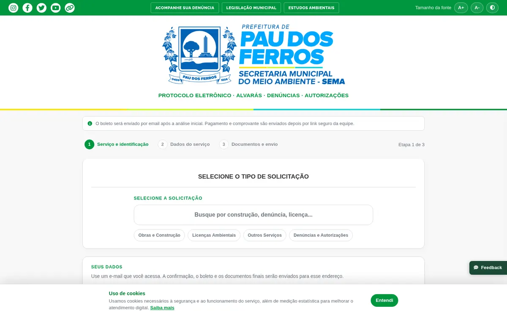
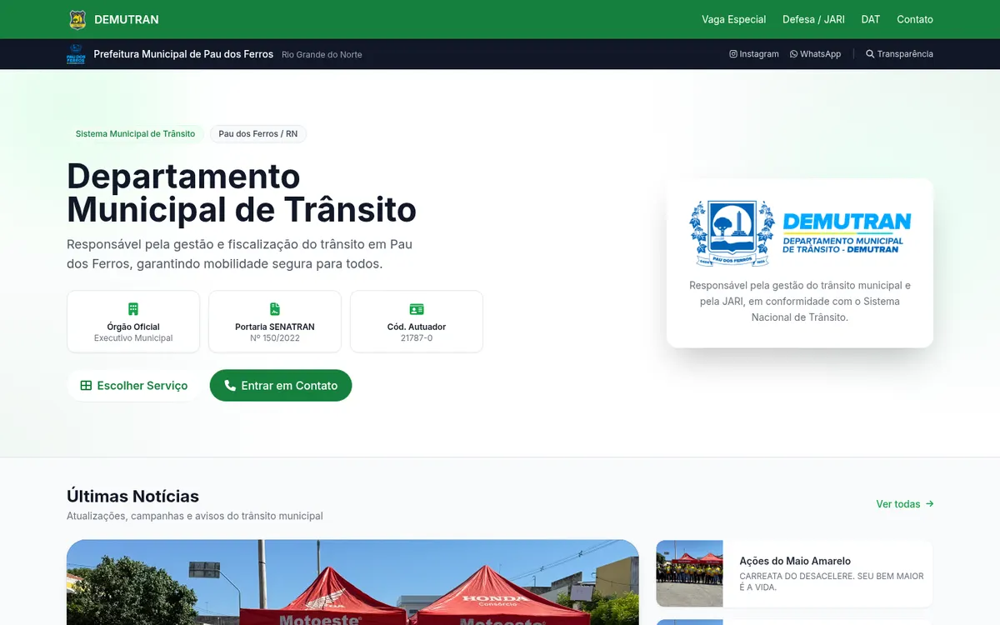
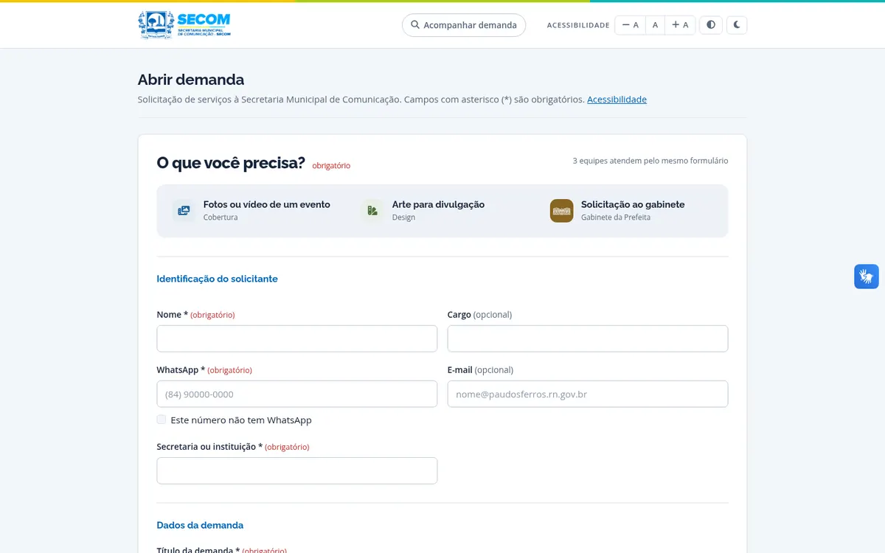

Agendamento online
O cliente marca sozinho pelo celular, recebe lembrete no WhatsApp e a recepção vê a agenda do dia. Menos falta, menos mensagem repetida.
clínicas · laboratórios · academiasPau dos Ferros · Alto Oeste potiguar
Somos a Indexa, uma dupla que desenvolve sites, agendamento online e protocolos digitais para prefeituras, clínicas e negócios da região. Tudo funcionando no celular, sem instalar nada.



Índice
Passe o mouse para espiar. Clique para ver o caso completo.
O que fazemos
O cliente marca sozinho pelo celular, recebe lembrete no WhatsApp e a recepção vê a agenda do dia. Menos falta, menos mensagem repetida.
clínicas · laboratórios · academiasFormulário em etapas, envio de documentos, número de acompanhamento e painel para a equipe responder. Adeus pasta de papel.
secretarias · autarquias · escritóriosEdital, inscrição online, conferência de documentos e lista de classificados. O mesmo motor serve para seletivo, edital de cultura e matrícula.
prefeituras · escolas · eventosPágina rápida, bonita no celular, com WhatsApp, horários e localização. Para quem hoje depende só do Instagram.
comércio · profissionais liberaisComo trabalhamos
Entendemos o problema antes de falar de tecnologia. Pode ser por vídeo ou aí no seu balcão.
Em poucos dias você mexe numa versão de verdade e diz o que muda. Sem surpresa no final.
Publicamos, ensinamos a equipe e acompanhamos a primeira semana de perto.
Ajuste, dúvida ou ideia nova: fala direto com quem fez, sem central de atendimento.

Quem somos
Somos uma dupla de Pau dos Ferros. A Indexa nasceu de sistemas que já fazemos para a prefeitura e para negócios da cidade, e da vontade de levar isso para o resto do Alto Oeste.
O nome vem de índice: colocar cada coisa no seu lugar, fácil de achar. É isso que a gente faz com processos que hoje vivem no papel e no WhatsApp.
Contato
Deixa seu nome e WhatsApp. A gente chama você para uma conversa rápida, sem compromisso.